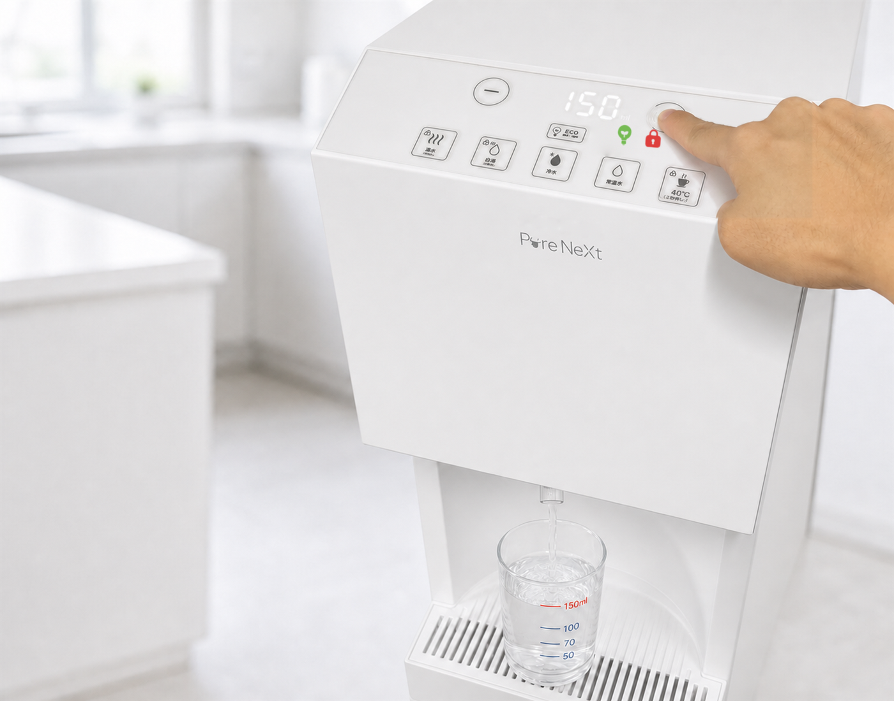

“
40℃モードなら、熱湯も冷水も測らず2ポチ。
夜中の調乳がホントに楽になりました。
10ml単位で量が変えれるので、
赤ちゃんの成長に合わせて変えられる。
気が利きすぎ。”

浄水型ウォーターサーバー PureNeXt
水がラクだと、毎日もラク。

温度
取水量
10ml単位
取水量のメモリ機能
前回取水した量が各ボタンごとに記憶されます。
毎朝の白湯など、習慣づきやすいよう
サポートします。

取水口UV殺菌
浄水から給水までの通り道を、
UVライトでしっかり管理。
いつでもきれいな水を、安心してどうぞ。

だから


こだわりの機能
01
全モードで量を指定して、
手放しで自動取水。
粉ミルクを作るための
目盛り合わせも不要に。
スープもいつもの濃さで。

02
朝の白湯と
夜の常温水、
ワンポチで出せる。


03
熱水1回＋冷水1回＝
指定量40℃。
スープや飲みものを、
ちょうどよい温度に。
熱水
1回
冷水
1回
40℃
設定温度

40℃モードなら、熱湯も冷水も測らず2ポチ。
夜中の調乳がホントに楽になりました。
10ml単位で量が変えれるので、
赤ちゃんの成長に合わせて変えられる。
気が利きすぎ。”

毎朝の白湯が習慣になりました。
もう沸かさなくていいのが快適です。
温度で迷わないのが、地味にうれしい。”

検討していた宅配水より、
自宅の使い方に合っていました。
冷蔵庫の場所も空いて、
段ボールをたたむ手間もゼロに。”
調乳や粉ミルクの作り方は、
厚生労働省のガイドラインをご確認ください
月額3,630円（税込）

分解されにくく、環境に残りやすい。
体内からの排出にも時間がかかるため、
継続的な摂取が懸念されています。
だから、毎日飲む水から減らす。

PFOS・PFOAを含む
PFASの除去に対応したフィルター
JIS17項目＋JWPAS4項目
※試験・表記内容は最終確認中
空気中や水はねから細菌が入りやすく、
残り水が常温になると菌が繁殖しやすい。
だから、内部のUV殺菌ライトを
残留水と出水口へ照射。

見落とされがちな、出水口の衛生。

熱によって
雑菌が繁殖しにくい環境

低温（5〜10℃）で
繁殖しにくい環境

常温になりやすく、
対策が必要な箇所
空気中や水撥ねから細菌が入りやすい。
残り水が常温になるので
菌が繁殖しやすい。


高さ
1200mm
奥行370mm
注水スペース
高さ250mm
受け皿 奥行160mm
1
水はねしにくい取水口

2
受け皿を外せる

3
500mlペットボトルも
楽々の余白。受け皿を
外すと2Lペットボトル
も入る。


4
丸い受け皿で、
鍋も置きやすい

WEBで申し込み
お届け
すぐ使える


飲んだ量を手軽に記録。
毎日の水分管理が
ひと目でわかる。
次のフィルター
お届け日を、
いつでも確認。
取扱説明書や
機能の確認も、
アプリですぐ。
| 製品名 | Pure Next |
|---|---|
| 型番 | — |
| 浄水方式 | — |
| 全体サイズ | H1200mm × W280mm × D370mm |
| 設置スペース | — |
| 重さ | — |
| タンク容量 | — |
| 温度 | — |
| 消費電力 | — |
| 電気代 | — |
| チャイルドロック | — |
| 注意事項 | — |
月額料金のほかに、ご契約時に初期手数料3,000円（税込）がかかります。フィルター代は月額料金に含まれています。電気代はお客様のご負担となります。
※配送・設置にかかる費用は現在調整中です。確定し次第、こちらでご案内します。
交換用フィルターは、交換時期に合わせて定期的にご自宅へお届けします。フィルター代は月額料金に含まれています。
※お届けの周期（目安：6か月〜1年ごと）は現在最終調整中です。確定し次第、こちらでご案内します。
ご契約には最低利用期間があり、期間内のご解約には所定の解約金がかかります。解約金はご利用年数に応じて少なくなる仕組みを予定しています。なお、お申し込み当日中（23:59まで）のキャンセルは無料です。
※最低利用期間・解約金の額は現在確定しておらず、お申し込み前の重要事項説明でご確認いただけます。
熱水と冷水を自動で組み合わせて、約40℃のぬるめのお湯を指定した量だけお作りするモードです。10ml単位で量を指定でき、ボタンひとつでちょうどよい温度をご利用いただけます。